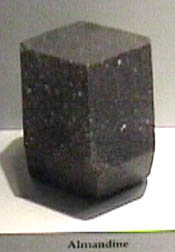
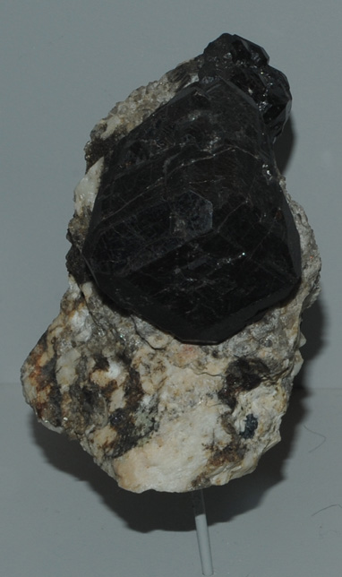
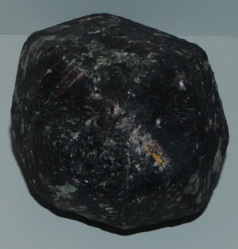
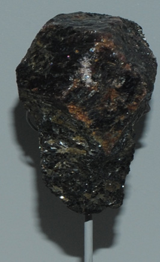
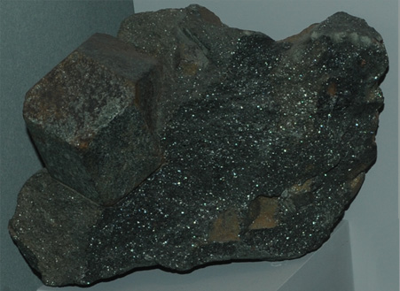
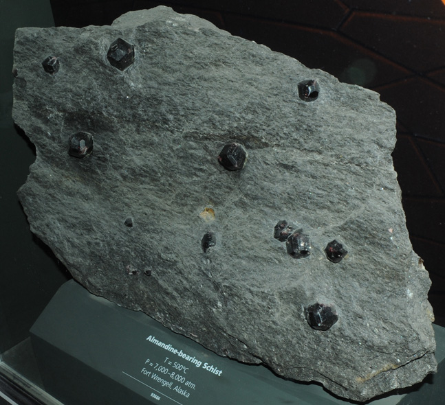
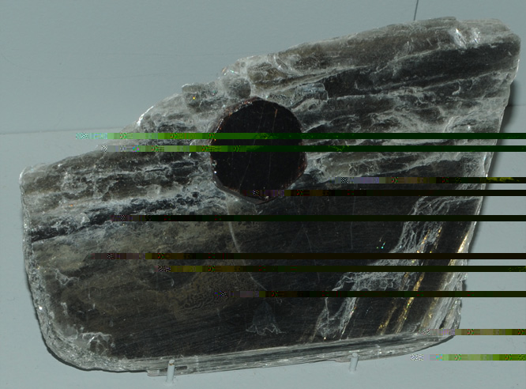

Almandine
| 
| Fe3Al2(SiO4)3
A silicate containing iron and aluminum, almandine has the composition Fe3Al2(SiO4)3. This sample of almandine originated in Southbury, Connecticut. The sample is 2-3cm across.
These samples are on display at the Smithsonian Museum of Natural History.
Mindat: Almandine
|
| 
|
The sample at left is about 3x6 cm and is from Cross Hill, Nuevo, California. The sample below is about 4x4 cm and is from Laos.

|
|  |
|  The left sample is about 2x3 cm and is from Gore Mountain, Warren County, New York. The sample above is almandine altering to chlorite. The sample is about 15 x 20cm and is from Salida, Colorado. |
This is a sample of almandine-bearing schist from Fort Wrengell, Alaska. It is about 25 x 30 cm. |  |
|  | This is a sample of muscovite with an embedded almandine garnet. The sample is about 7 x 10 cm. It is from Deer Park mine, Penland, North Carolina. |
|
Index |